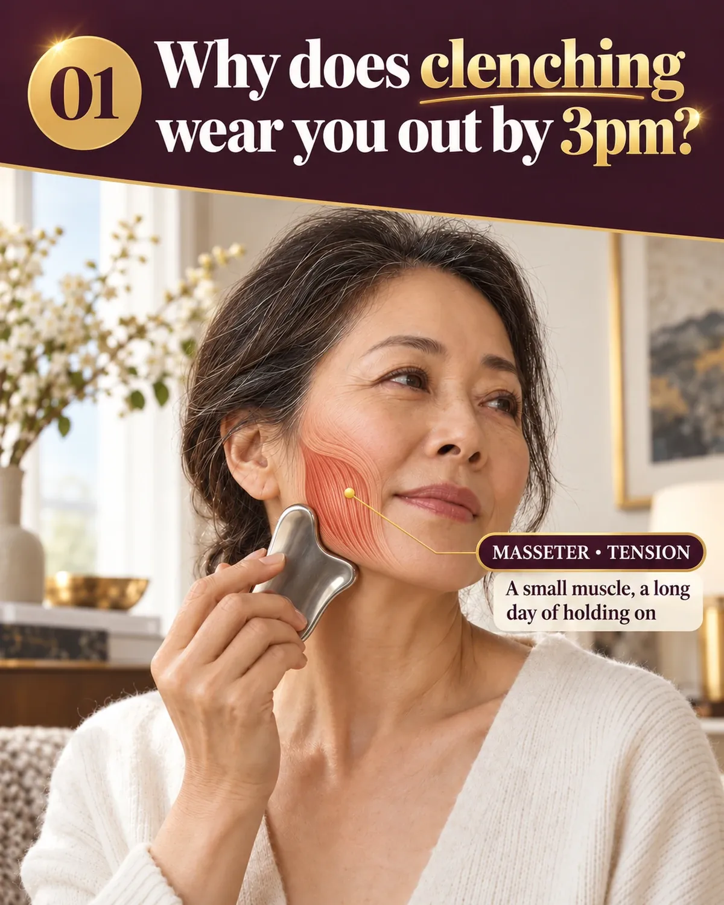
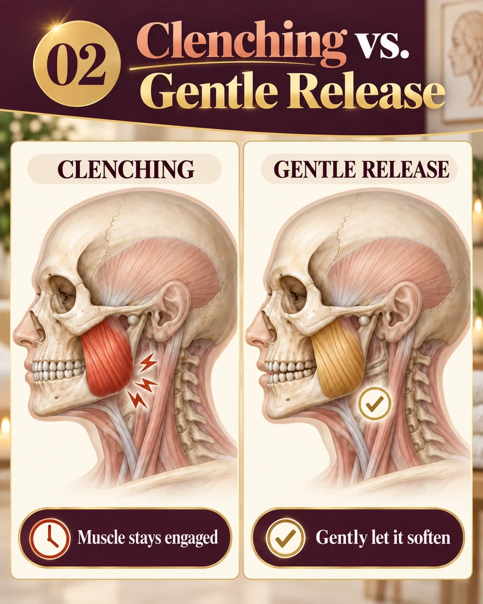
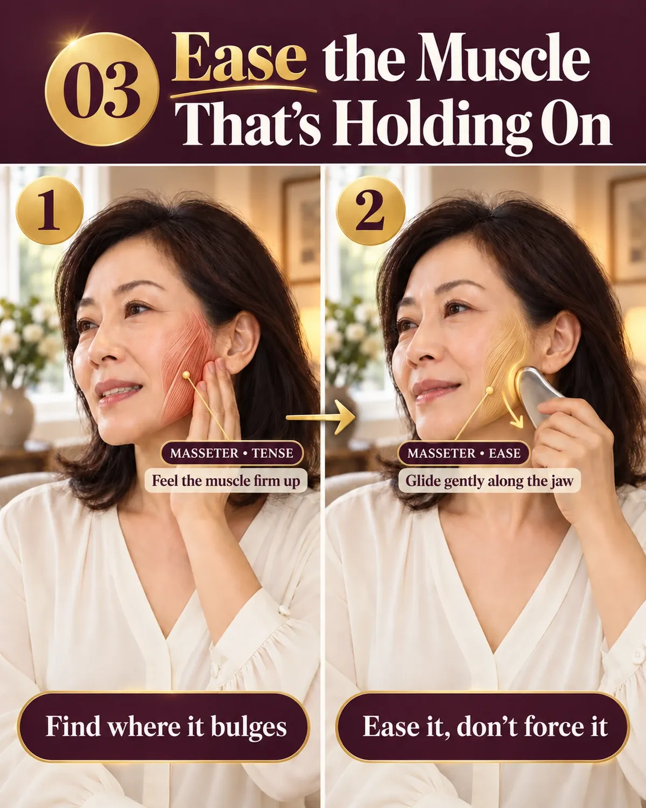

The Bojin Journal · Myths & real talk
Clench or Grind Your Teeth? An Honest Look at Jaw Tension and Bojin

Some mornings you wake up and your jaw is already tired, like you've been working it all night. Maybe your dentist has mentioned wear on your teeth, or you catch yourself clenching at your desk when a stressful email lands. That tightness at the back corners of your jaw is one of the most common things my students bring to me, and it deserves an honest answer, not a big promise.
- That afternoon ache is a muscle that's been braced for hours, not a sign something's wrong with you.
- Gentle bojin work can ease the surface tension and help the jaw feel looser.
- It can't stop the clenching habit or protect your teeth, that's still a job for your dentist and a night guard.
- Five simple steps, a few minutes, comfortable pressure, never force.
So let me be straight with you about what a few gentle minutes can and can't do for a jaw that clenches.
Why the jaw gets so tight
The muscle at the corner of your jaw, the one you can feel bulge when you bite down, is one of the strongest in the body for its size. When you clench during the day or grind at night, that muscle spends hours contracted.
That steady tension is what you feel as tightness, tenderness, and a fuller, more square look along the jawline.
Over time it stays a little braced even when you're not actively clenching, carrying that tightness into the next day before it ever gets the chance to fully let go.
Stress feeds it. So does concentration, screens, and the simple habit of holding your teeth together when you should be resting them apart. Most people have no idea how often they clench until they start noticing.

How bojin helps, and where it stops
Here's the honest framing. Bojin is a gentle, external method, order and angle and comfortable pressure applied to the muscle and the skin over it. Working that jaw muscle with the stick can ease the surface tension you're holding, help the area feel less braced, and soften that end-of-day tightness for a while. Many women find the jaw feels looser and calmer afterward.
What it cannot do is fix the clenching itself, protect your teeth, or take the place of anything your dentist recommends, like a night guard. If grinding is wearing your teeth or waking you up, that's a conversation for a dental professional, and bojin sits alongside their advice, not in place of it. I'd rather tell you that plainly than pretend a stick solves everything.
Bojin can ease the surface tension you're holding in the jaw muscle. It cannot stop the clenching habit itself or protect your teeth. Those two things need different tools.
A stainless steel bojin stick works well here because its rounded tip can meet the dense jaw muscle at the right angle with comfortable pressure, reaching the tension without the force that leaves you sore. If you have the gua sha stone you already own, its firmer edge works for this area too.
The 5 steps for a tight, clenching jaw
- Add slip and unclench first A little oil or cream, and consciously let your teeth part so the muscle is at rest before you begin.
- Warm the jaw and cheek A few flat, gliding passes over the whole lower face to bring warmth before you work deeper.
- Find the muscle Gently bite down once to feel where the muscle bulges at the corner of your jaw, then relax your teeth apart again.
- Work it at a comfortable pressure Slow passes over that muscle with the rounded tip, firm enough to meet the tension, never enough to hurt. A little goes a long way here.
- Finish down the neck Carry everything down and off along the neck, the same close to every session.

Honest expectations, and a safety note
The relief here is gentle and temporary. You'll likely feel looser afterward, and with consistency the jaw can feel less braced day to day, but this isn't a cure for clenching or grinding and it won't rebuild worn teeth. Pair it with whatever your dentist advises and with easing the daytime clench habit itself.
Tonight, notice where your teeth are as you read this. If they're touching, let them part, and that alone is a start.
Quick answers
Can bojin stop me from clenching or grinding?
No. It can gently ease the surface tension in the jaw muscle, but it can't stop the clenching habit or protect your teeth. That's a job for your dentist.
Does bojin replace a night guard?
No. If you grind at night, a night guard from your dentist protects your teeth. Bojin sits alongside that advice, not in place of it.
Which part of the tool works on the jaw muscle?
The rounded tip, used at a comfortable pressure, meets the dense jaw muscle without the force that leaves you sore.
I have TMJ pain. Is bojin safe for me?
Check with a dentist or doctor first. If you have jaw pain, clicking, locking, or a diagnosed disorder, ask whether gentle jaw work is appropriate before trying it.
Want the full evening jaw-release routine?
Get my 3-minute evening jaw-release routine to pair with this, plus the free video that shows the technique on a real face.
Watch the free 3-min videoYu-Ting Lan is a Taiwan-based international bojin instructor and the founder of Héhé Studio. She has taught her bojin method to more than a thousand students, from complete beginners to grandmothers, across Taiwan, Hong Kong, and Malaysia.